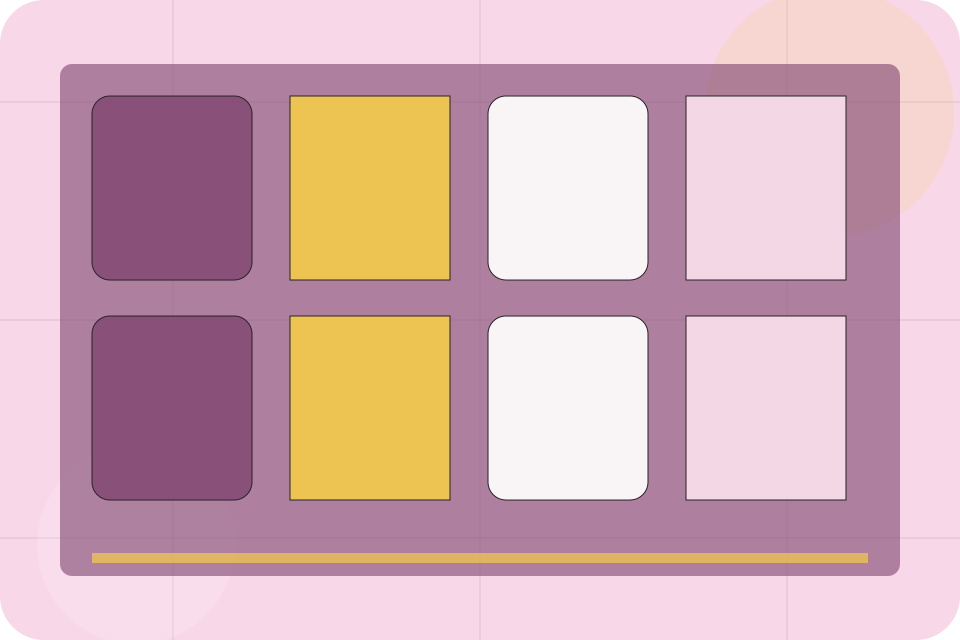
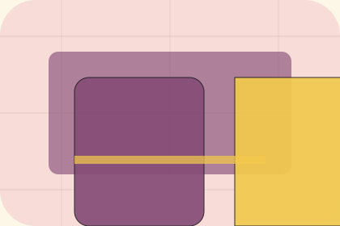

Gallery / 01
Gallery by Table
Gallery shaped for restaurants, cafes & food service decisions.
Gallery opens as a clear restaurants decision hub: what Table offers, who it helps, why it matters, and which route to take first.
The first screen combines positioning, proof, primary action, and fast internal navigation, so people can act immediately or compare the rest of the gallery route with context.
Check availabilityPlan the visitReserve with context

Gallery / 02
Food inside gallery
Food adds hospitality context to the gallery route, using the surreal reservation stage structure to support desire and social confidence before visitors choose a next step.
Table uses ornate menu cards and focused copy to make the decision easier to scan, aligning the section with desire and social confidence rather than filling space.
Explore GalleryGallery / 03
Interior inside gallery
Interior adds hospitality context to the gallery route, using the surreal reservation stage structure to support desire and social confidence before visitors choose a next step.
Table uses ornate menu cards and focused copy to make the decision easier to scan, aligning the section with desire and social confidence rather than filling space.
Explore GalleryContext
Interior gives the page a specific angle instead of repeating the navigation label.
Judgment
The ornate menu cards show what to compare, what to avoid, and what matters most for restaurants, cafes & food service visitors.
Direction
The final cue points to a useful internal route so the section keeps the journey moving.
Gallery / 04
Who handles people
People introduces the people, roles, or specialist credibility behind Table so the decision feels less anonymous.
The copy ties names, roles, credentials, or availability back to the decision on the page instead of treating profiles as decorative biographies.
Explore GalleryRole
The person, team, or specialist function connected to people is easy to understand.
Credibility
Credentials, responsibilities, or availability are tied to the visitor's decision, not listed for decoration.
Handoff
The section explains how to move from profile interest to a practical conversation or booking path.
Gallery / 05
Events inside gallery
Events adds hospitality context to the gallery route, using the surreal reservation stage structure to support desire and social confidence before visitors choose a next step.
Table uses ornate menu cards and focused copy to make the decision easier to scan, aligning the section with desire and social confidence rather than filling space.
Explore GalleryGallery / 06
Details inside gallery
Details adds hospitality context to the gallery route, using the surreal reservation stage structure to support desire and social confidence before visitors choose a next step.
Table uses ornate menu cards and focused copy to make the decision easier to scan, aligning the section with desire and social confidence rather than filling space.
Explore GalleryGallery / 07
Mood inside gallery
Mood adds hospitality context to the gallery route, using the surreal reservation stage structure to support desire and social confidence before visitors choose a next step.
Table uses ornate menu cards and focused copy to make the decision easier to scan, aligning the section with desire and social confidence rather than filling space.
Explore GalleryGallery / 09
Instagram inside gallery
Instagram adds hospitality context to the gallery route, using the surreal reservation stage structure to support desire and social confidence before visitors choose a next step.
Table uses ornate menu cards and focused copy to make the decision easier to scan, aligning the section with desire and social confidence rather than filling space.
Explore GalleryGallery / 10
Reserve Table
Table closes the gallery route with a clear action, a quick reminder of the value, and a low-friction way to reserve a table.
Visitors who are ready can use the primary action. Visitors who are still comparing can scan the section links, proof, and support routes before they reserve a table.
Reserve TableThe final block keeps the choice simple: act now, compare one more proof route, or send enough detail for a focused response.
Reserve Tabledesire and social confidence
Reserve Table
A sensory restaurant site with pastel stage surfaces, menu cards, room-gallery rhythm, and booking CTAs. Gallery ends with a direct path to reserve a table, plus enough context for visitors who still need to compare.

Reserve TableImportant notes before you act
Menus, allergens, prices, and availability must be confirmed by the venue before ordering or booking.